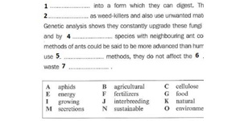

2023年7月26日より新形式TOEFL iBT テストに変更されます。
- POINT1
TOEFLを熟知した講師陣
-
マイチューターでは、TOEFLテストに熟知したインストラクターが常に社内研修で効果的な指導法をブラシュアップしております。
- POINT2
安心価格
-
驚きのコストパフォーマンスを実現

- POINT3
担任制 予約確保サービス
（同時に自由予約も可能です） -
全てが専門インストラクターとのプライベートレッスンです。取りずらい講師の予約もこちらで予約確保をするので計画的に受講できます。

- POINT4
短期集中でスコアアップ！
＜1日の受講時間制限なし＞ -
テストが1か月後に迫っていても大丈夫です。好きな時間に好きなだけ受講できるので短期スコアーアップが期待できます。
全ての講師がTOEFLインストラクター
マイチューターに登録する講師全員がTOEFL 指導に精通しており、効果的な指導法について常に活発な意見を交わしています。


TOEFLインストラクターは「マイページ」からご予約いただけます。
TOEFLスピーキング Perfect Master特訓ゼミとの違い
Perfect Master シリーズ（２）が新たに加わりました。レッスン概要➤
＜レッスンコース案内＞
▮初回のみ「講師への連絡」から希望コース（英字）をお伝えください。2回目以降は受講歴から順番に進めていきます。
▮TOEFLスピーキングPerfect Master Basic(英字：TOEFL Speaking Perfect Master Basic)
●最大レッスン数：100レッスン（必要な分だけ受講してください）
▮TOEFLスピーキングPerfect Master Intermediate(英字：TOEFL Speaking Perfect Master Intermediate)
●最大レッスン数：40レッスン（必要な分だけ受講してください）
▮TOEFLスピーキングPerfect Master Advance(英字：TOEFL Speaking Perfect Master Advance)
●最大レッスン数：52レッスン（必要な分だけ受講してください）
レッスンの特徴
- 高得点を導くナビゲーション・メソッド -
- Perfect Master Basic
全100レッスン - 目標スコアー 61点（Speakingセクション 15点）を目指す受講者向け
- 実際の試験より短く簡単な問題です。
- 模範回答を参照に段階的に模範回答へと導きます。
- 回答を導くガイドに沿った学習法で、様々なトピックを練習します。
- 実際の試験同様、2019年8月テスト形式変更に対応しています。
- Perfect Master Intermediate
全40レッスン - 目標スコアー 80点（Speakingセクション 20点）を目指す受講者向け
- 本題の前に関連する会話を聴き、質問に回答することで本題に備えます。
- 問題は比較的やさしいトピックスを扱います。
- 回答に導く質問形式のガイドは比較的やさしく回答できます。
- 本題中のリスニングではNote Taking を徹底的に鍛えます。
- 模範解答を聞いて自分の回答と比較し、改善点を検討します。
- 実際の試験同様、2019年8月テスト形式変更に対応しています。
TOEFLスピーキング 模試 (Mock Test) 特訓ゼミサンプル教材
＜レッスンコース案内＞
▮初回のみ「講師への連絡」から希望コース（英字）をお伝えください。2回目以降は受講歴から順番に進めていきます。
▮TOEFLスピーキング(模試)特訓ゼミ(英字：TOEFL Speaking Mock)
●最大レッスン数：130レッスン（必要な分だけ受講してください）
●Q1～Q4（Independent/ Integrated）を 試験通りの順で進めていきます。1つのmock testを2レッスン（1レッスン/25分）使い指導します。
教材の取り扱い注意
- ◆
- 教材はレッスン毎に講師からPDFで渡されます。教材にある音声再生ボタンをクリックするだけで音声が再生されます。
- ◆
- 予習で必要な場合は、レッスンの最後に講師から受け取り下さい（次回分のみ）
- ◆
- 1つの mock test (2 レッスン)は必ず同じ講師で受講してください。同じ講師２コマ連続予約をお勧めします
- 【Question Type 1】
類似問題形式 トレーニング
出題されるトピックは身の回りの一般的なもので2者択一問題となります。自分が選んだ理由を具体的に述べるレッスンです。
- 【Question Type 2】
類似問題形式 トレーニング
本番同様、Reading→Listening→Speakingの統合型問題です。出題されるトピックはキャンパスで交わされる会話です。
- 【Question Type 3】
類似問題形式 トレーニング
本番同様、Reading→Listening→Speakingの統合型問題です。出題されるトピックはアカデミックな講義になります。
- 【Question Type 4】
類似問題形式 トレーニング
本番同様、Listening→Speakingの統合型問題です。出題されるトピックはアカデミックな講義になります。
TOEFL ライティング模試 (Mock Test) 特訓ゼミ
サンプル教材レッスンの進め方
＜レッスンコース案内＞
▮初回のみ「講師への連絡」から希望コース（英字）をお伝えください。2回目以降は受講歴から順番に進めていきます。
▮TOEFLライティング（模試）特訓ゼミ(英字：TOEFL Writing Mock )
●Integrated 85（170レッスン）（必要な分だけ受講してください）
●Academic Discussion 100問（100レッスン）（必要な分だけ受講してください）
●1 Mock Test はIntegrated→Academic Discussionの順で進めていきます。
標準必要時間：Integrated1問＝50分（2レッスン）、Academic Discussion1問=25分（1レッスン）
教材の取り扱い注意
- ◆
- 教材はレッスン毎に講師からPDFで渡されます。教材にある音声再生ボタンをクリックするだけで音声が再生されます。
- ◆
- 予習で必要な場合は、レッスンの最後に講師から受け取り下さい（次回分のみ）
- ◆
- 解答文文書ファイルとしてWord又はOpen Office Writer（無料）が必要です。
- ◆
- 1タスク (2 レッスン)は必ず同じ講師で受講してください。同じ講師２コマ連続予約をお勧めします
Reading リーディング
TOEFLリーディングは英語の読解力を測る試験です。制限時間60〜80分の間に、3〜４題のパッセージを読み、それぞれ12〜14問に解答します。各パッセージの長さは700語程度で、内容は天文学、歴史、生物など大学の教養課程で学習する、いわゆる一般教養が多く出題されます。
マイチューターでは、実際のパッセージ内容と出題傾向に合わせたカリキュラムをご用意しました。 カリキュラムを受講いただくことで、パッセージの主題・主旨・語彙・キーワードを理解しながら速読する力が身につきます。
レッスンの進め方
- ①
- オリエンテーション
初回は、TOEFLリーディング攻略法とカリキュラムのオリエンテーションとなります。レッスンの最後に次回のレッスン教材（PDF）を受け取って終了となります。 - ②
- 予習（自習）
スカイプレッスンの前に受け取ったレッスン教材（問題）を全て解答してください（予習） - ③
- スカイプレッスン（設問の解き方）
スカイプレッスンでは講師と問題の答合わせ、設問の解き方、パッセージの重要ポイントや語彙に関するレッスンとなります。
TOEFLリーディング特訓ゼミ
＜レッスンコース案内＞
▮初回のみ「講師への連絡」から希望コース（英字）をお伝えください。2回目以降は受講歴から順番に進めていきます。
▮TOEFLリーディング特訓ゼミBasic(英字：TOEFL Reading Basic )
●最大レッスン数：50レッスン（必要な分だけ受講してください）
●実際の試験問題より短く、易しい内容のパッセージを使います。
問題タイプ毎にレッスンが作られていますのでTOEFLの出題形式に簡単に慣れていただけます。
▮TOEFLリーディング特訓ゼミRegular(英字：TOEFL Reading Regular )
●最大レッスン数：70レッスン（必要な分だけ受講してください）
●実際の試験問題同等の語数と難易度のパッセージを使います。
実際の試験問題と同じ問題タイプを使った実践練習です。
レッスンの主なねらい
- 読解力 Reading Comprehensionn

基本的な読解力を鍛えるトレーニングです。パラグラフの構成やパッセージ全体の主題を読み取る力がつきます。
- テスト形式に慣れる Test Lay-out
- 
Factual Information, Vocabularyなど実際に出題される様々な問題タイプを使った実践練習です。
- 読解テクニック Reading Method

スキミングやスキャニングなど読解テクニックを自由に使いこなす練習です。
- 時間管理 Time Management

700語くらいのパッセージを読み12〜14問を20分で解くための時間管理力を養います。
Listening リスニング
TOEFLリスニング模試（Mock Test）特訓ゼミ
＜レッスンコース案内＞
▮初回のみ「講師への連絡」から希望コース（英字）をお伝えください。2回目以降は受講歴から順番に進めていきます。
▮TOEFLリスニング(模試)特訓ゼミ(英字：TOEFL Listening Mock Test)
●最大レッスン数： 53レッスン （必要な分だけ受講してください）
●試験同様、「Lecture」「Conversation」と進めていきます。
受講者のレベルで１レッスン当たりの所要推定時間が変わります。
上級者： 1mock test＝1レッスン（25分）
初級～中級者：1mock test＝2レッスン（50分）
▮TOEFL Listening Perfect Master Basic(33レッスン)
▮TOEFL Listening Perfect Master Intermediate(33レッスン)
▮TOEFL Listening Perfect Master Advance (33 レッスン)
教材の取り扱い注意
- ◆
- 教材はレッスン毎に講師からPDFで渡されます。教材にある音声再生ボタンをクリックするだけで音声が再生されます。
- ◆
- 予習で必要な場合は、レッスンの最後に講師から受け取り下さい（次回分のみ）
- ◆
- 1mock test (1～2 レッスン)は必ず同じ講師で受講してください。初級～中級者は同じ講師2コマ連続予約をお勧めします
受講者の声

- 20代 学生 香織さま
-
私は留学の為TOEFLテストを何度も受験しました。初めはテストに対する知識もなく、スピーキング、ライティングに全く対応出来なかった為、点数は50点にも届きませんでした。
この2セクションに対する苦手意識が強く、点数を伸ばすことは出来ないのではないかと落胆していたのですが、マイチューターTOEFL特訓ゼミ（スピーキング・ライティング同時受講）におせわになり、3ヶ月後に受けた試験では75点。
また、半年後には92点をマークし100点台をも狙えるまでになりました。
始めはいろいろな講師の方を受講していたのですが、途中からスピーキングとライティングそれぞれ1講師を選び集中して受講しました。多い日は一日に8レッスンくらい受講していたと思います。
1日の受講数に制限がなく、週3コマを予約確保してくれるので、同じ先生と短期間で集中的にレッスンを受けられました。留学日程上、短期間にどうしてもスコアアップを達成したかった私にとってありがたい制度でした。
先生はTOEFLテストに熟知していて、文法の間違えやボキャブラリー、表現の修正をその場で指摘してくれます。また、チャットボックスを使い丁寧に文章や適切な表現をタイプしてくれ、これはレッスン後の復習になりました。
現在、私はニューヨークにある大学で勉強をしています。
TOEFLの勉強をしていた時は、とにかく点数を伸ばすことに重点を置いていた為“テスト対策をしていた”という意識が強かったのですが、学校に通い始めてからはTOEFL特訓ゼミでの勉強が日常的な局面に於いても、いかに有益であったかに気付かされることが多くあります。
- 30代 元広告会社勤務 直樹さま
-
私は、広告会社に入社して5年を経た時にアメリカの大学院留学を決意しました。
検討していた大学院で求められるTOEFLテストスコアが最低100点でしたが、最初は独学で勉強をはじめました。3ヶ月後受けたTOELのスコアが48点と目標スコアに遠く及ばず、ハードルの高さに途方に暮れてしまいました。
とにかく独学はあきらめ、スクール選びに専念しました、会社近くの専門学校やオンラインスクールなどTOEFLコースがあるところを20校くらい検討し、体験レッスンを受けて最終的にマイチューターさんを選びました。
マイチューターさんを選んだ理由は、コストパフォーマンスの高さです。TOEFLテストに熟知した専門インストラクターがマンツーマンで好きなだけ受講ができます。受講にかかる費用は全く気になりませんでした。受講料は他行と比較にならないほど割安で、通常の10分の１くらいです。1日の受講時間に制限がないので、出遅れていた分を短期集中で挽回できました。とにかく時間を有効に使いたかったのでグループレッスンで講師の話を聞く時間がもったいなく思い、プライベートレッスンでスピーキングとライティングを徹底的に添削修正してもらいました。リーディングとリスニングは講師からアドバイスをもらい参考書や専用アプリで何とか自分でできました。受講してから3ヶ月後に78点、10か月後の5回目のテストで100点を突破しました。
80点を超えたあたりから丸覚えの解答ではスコアが伸びず、多様な表現力を身に付ける必要がありました。
私は講師を３名にすることで多様な解答力を身に付けられたと思います。現在アメリカの大学院のMBAプログラムを学んでいます。
1日何ページもの予習や、エッセイの宿題、プレゼンテーションをする中でも、TOEFLクラスで培ったものが大いに役に立ちました。
アンケートモニター提供元：ゼネラルリサーチ
調査期間： 2021年1月22日～23日
調査方法：インターネット調査
調査概要：オンライン英会話10社を対象にしたサイト比較イメージ調査
調査対象：全国の20代～50代の男女1017名